Bone SafeguardTM
A Science-Based, Nutritional Weapon Against Bone Decay
Osteoporosis X-Ray
The term "osteoporosis" comes from Latin for "porous bones."
A healthy bone has small spaces like a honeycomb.
Osteoporosis increases the size of these spaces,
causing the bone to lose strength and density while
the outside of the bone grows weaker and thinner.
Our bones are living tissue that is constantly being resorbed and reformed.
Osteoporosis results when more bone is resorbed than reformed (Martin 2009, Body 2011).
When we are younger, this turnover happens quickly, making our bones dense and strong.
As we get older, the process slows, and our bones lose mass faster than it can be replaced.
Anyone who is losing height with age may have osteoporosis.
Unfortunately, osteoporosis typically has no symptoms until a serious fracture occurs,
usually from a relatively minor injury (Azagra 2011).
Fully one third of those affected by the condition are males.
About half of American women and 25% of American men over 50
will break a bone due to osteoporosis (Bone Health, Ahmed 2009).
Within a year of suffering a hip fracture, more than 20% of
patients may die (Osteoporosis Foundation, Panula 2011).
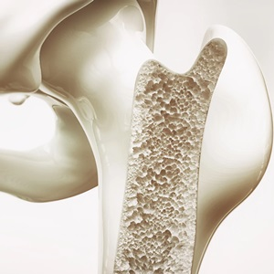
Osteoporosis
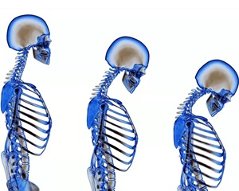
Aging and Osteoporosis
Prevention of osteoporosis is a much better choice than treatment.
Therefore, it is essential to take all measures to prevent the disease.
We recommend the strategic use of nutritional supplements to restore and maintain our bones.
Our supplement regimen goes beyond simple recommendations for calcium and vitamin D.
Combinations of nutrients are required for bone health (Genuis 2012).
For example, both vitamin D and magnesium are necessary for proper calcium deposition and bone development.
Using single supplemental vitamins or minerals in isolation may not be successful.
Using nutrients in combination may work much better (Rude 2004).
Vitamins
Vitamin D
| Vitamin |
Quantity |
| Vitamin D3 |
2000 IU |
| Vitamin K2 (methaquinone-4) |
45000 mcg |
| Vitamin C (ascorbic acid) |
90 mg |
| Vitamin E |
400 mg |
Vitamin D is essential for bone health.
It is crucial for calcium absorption,
and it helps regulate how much calcium
enters and leaves bone tissue (Chen 2019).
Many people obtain vitamin D through sunlight exposure.
But this can be difficult during the winter and for
those who spend most of their time indoors (Chen 2019).
It is estimated that 50% of the population has low levels of vitamin D (Sizar 2022).
 Vitamin D
Vitamin D
Low vitamin D and calcium intake are well-known causes of osteoporosis
(Cherniack 2008, Lips 2010).
One study including 400 older adults found that people with
osteoporosis were more likely to be deficient in vitamin D.
A daily vitamin D supplement was linked to a lower incidence of osteoporosis
(Shahnazari 2019).
To reduce the risk of bone fractures and ensure sufficient blood levels,
research suggests that a dose of 400-800 IU of vitamin D per day may be sufficient
(Reid 2019, Burt 2019).
Vitamin K2
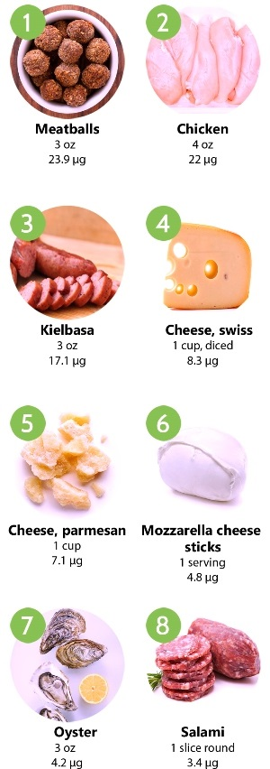
Sources of Vitamin K2
Like vitamin D, vitamin K2 plays a crucial role in keeping calcium where it belongs,
in our bones, and out of our blood vessels, which can cause calcium deposits in our arteries.
People with lower vitamin K levels are at increased risk for calcification (hardening) of the arteries
(Okura 2010).
Increasing your calcium intake can be counterproductive if you are not getting enough vitamin K2.
Without enough K2, excess calcium will remain in your bloodstream,
which can cause high blood pressure and heart disease.
Studies using the data from tens of thousands of people have shown that those
with high intakes of vitamin K2 are far less likely to die of heart disease.
In one study, they were 57% less likely
(Geleijnse 2004).
Our advice: If you are taking a calcium supplement without adequate intake
of vitamins K2 and D in your diet or through supplementation: Stop!
For decades, doctors in Japan have been using high doses of vitamin K2 as
a prescription drug to prevent bone loss and protect against fractures.
It is now available in the U.S. without a prescription.
Vitamin K2 is important in maintaining bone strength and preventing bone breakdown.
It is essential for building the protein matrix that traps calcium crystals in bone
(Bugel 2008).
Low levels of vitamin K have been associated with an increased risk of bone fractures and low bone density
(Akbari 2018, Rodriguez 2019, Apalset 2011).
Vitamin K2 has been shown to support bone health when used as a supplement
(Bunyaratavej 2009, Sato 2002).
Vitamin K2 supplementation improved bone mineral density and
significantly reduced rates of fractures - including hip fractures
(Cockayne 2006).
A 2017 study found that people taking a vitamin D, calcium, and K2
supplement were 25% less likely to suffer fractures during their lifetime
(Schwalfenberg 2017).
Studies have found that high-dose vitamin K2 prevents fractures and sustains bone mineral density in osteoporosis
(Iwamoto 2009, Shiraki 2000).
Scientists found that 45 mg (45,000 mcg) per day was the optimal dose for improving bone mass
(Orimo 1992).
This is about 380-500 times greater than what is considered an adequate daily dietary intake (90-120 mcg)
(Harvard).
No toxic effects of vitamin K2 were reported
(Orimo 1992).
Note: Anyone taking warfarin should consult a physician before taking any form of vitamin K.
Warfarin blocks vitamin K activity in the body,
which means warfarin users must avoid vitamin K supplements and foods high in vitamin K.
Vitamin C
Vitamin C plays a vital role in the production of proteins,
the development of bone-forming cells, and bone mineralization
(Zinnuroglu 2011, Hall 1998).
Vitamin C also suppresses bone-resorbing cell activity
while promoting bone-forming cell maturation
(Gabbay 2010).
Women with higher vitamin C intake have significantly better bone
mineral density when their calcium intake is above 500 mg/day
(Hall 1998).
Women who took vitamin C daily achieved stable bone mineral density
compared with placebo recipients, whose density dropped over six months
(Chuin 2009).
In another study, greater vitamin C intake was associated with a lower risk
of hip fracture, a 33% lower risk of osteoporosis, and higher bone density
(Malmir 2018).
And these benefits are not just for women.
In one study, 958 men and women were followed for 17 years.
Participants had 100 hip fractures during that time.
Subjects in the highest third of supplemental vitamin C intake had
significantly fewer hip fractures than subjects in the lowest third
(Sahni).
In another study with over 1400 people, vitamin C was positively
associated with bone density in young and early middle-aged men
(Lan 2022).
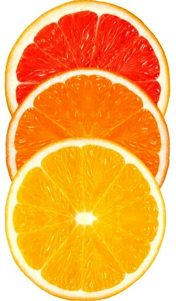
Vitamin C
Vitamin E
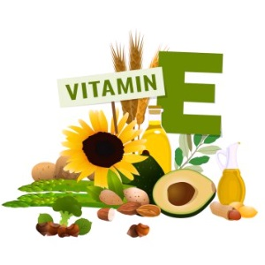
Vitamin E
Bone remodeling is a tightly coordinated, lifelong process of
replacing old damaged bone with newly-synthesized healthy bone.
The imbalance between bone formation and degradation leads to osteoporosis.
Vitamin E has been extensively studied for its anti-osteoporotic properties
(Wong 2019)
and has been shown to have beneficial effects on bone formation and bone density
(Shuid 2019)
(Mata-Granados 2013).
Alpha-Tocopherol is the predominant form of vitamin E in vitamin supplements, whereas gamma-tocopherol is the primary form of vitamin E in the US diet.
The gamma-tocopherol form of vitamin E is a better predictor of bone health than alpha-tocopherol.
Taking alpha-tocopherol can suppress gamma-tocopherol (Wolf) and may even adversely affect bone formation
(Hamidi 2012).
Bone Safeguard supplies 400 mg of gamma-tocopherol in every serving.
Minerals
Calcium
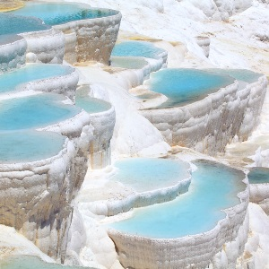
Calcium Pools
Crystals of calcium compounds give bone its hardness and strength.
Most Americans do not meet the daily adequate intake for calcium,
so supplementation is generally recommended
(Straub 2007)(Cosman 2014).
Low intake of vitamin D and calcium are well-known causes of osteoporosis
(Cherniack 2008, Lips 2010).
A review of 8 scientific studies found calcium plus vitamin D supplements were
linked to a 15-30% reduced risk of fractures in both middle-age and older adults
(Weaver 2016).
| Mineral |
Quantity |
| Calcium |
500 mg |
| Magnesium |
210 mg |
| Potassium |
200 mg |
| Boron |
3 mg |
| Copper (oxide) |
450 mcg |
| Manganese (sulfate) |
1150 mcg |
| Selenium |
? mcg |
| Silicon |
50 mg |
| Zinc |
6 mg |
Calcium may also help us lose weight.
low calcium intake is associated with a high body
mass index (BMI) and high body fat percentage
(Bueno 2008).
In another study, overweight college students who took calcium
and vitamin D lost more body fat than those who did not
(Zhu 2013).
Note: Our bodies can't absorb large doses.
Experts recommend taking no more than 500 mg at a time
(Waldman 2015).
And it should be taken with or after meals to increase absorption
(Heaney 1989).
Magnesium
Magnesium, like calcium, makes up the mineral matrix of
bone and is needed to maintain healthy bone density
(Matsuzaki).
Sixty percent of our body's magnesium is stored in bone (Gröber).
A substantial number of people may be at risk for magnesium deficiency
(Rude 2004).
Older adults tend to be magnesium deficient because of reduced
dietary intake and absorption and increased urinary losses
(Barbagallo 2009).
Several studies have demonstrated that long-term magnesium deficiency results in bone loss.
One study found that 40% of women with osteoporosis or low bone density had low magnesium levels
(Mahdavi-Roshan).
Low magnesium intake and blood levels are associated with an increased risk of fractures
(Kunutsor, Veronese).
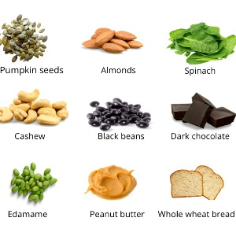
Magnesium Sources
Magnesium supplementation in animal and human studies reduces bone turnover,
tending to favor bone formation over bone resorption
(Aydin 2010).
People who consume higher amounts of magnesium through their diet or
supplements have better bone mass density than those consuming lower amounts
(Orchard, Farsinejad-Marj, Abraham, Ryder).
A study of over 73,000 women found that women who consumed 400 mg of magnesium
per day had higher bone density than those who consumed half this amount
(Orchard).
Potassium
Potassium from Beets and Bananas
Healthy bodies maintain a blood pH between 7.35-7.45.
This is one of the most tightly regulated setpoints in our bodies.
When it drops to the low end of this range, our blood is acidic, and our bodies fight to neutralize the acid.
Calcium is a base (opposite of acidic).
Our bodies dissolve some calcium from our bones to offset acidic blood.
If this situation is not corrected,
new bone formation is suppressed,
and there is an increase in urinary calcium excretion,
bone loss, and incidence of bone fracture
(Carnauba 2017).
Bicarbonate plays a big role in neutralizing acid.
As our bicarbonate supply gets depleted,
calcium is removed from bones and lost in the urine.
Potassium bicarbonate has been shown to lower calcium loss and reduce bone resorption
(Dawson-Hughes 2009, Sebastian 2005, Tylavsky 2008).
Higher potassium intake has been positively associated with bone metabolism
(MacDonald 2005, Green 1991).
A study involving 186 men and women from 23 to 76 years old showed that a diet high
in bicarbonate and potassium (The DASH diet) significantly reduces bone turnover
(Lin 2003). Nearly 98% of all adults in the United States do not get the recommended daily potassium intake
(Cogswell 2012).
Bone Safeguard supplies potassium and bicarbonate in the form of potassium bicarbonate.
Trace Minerals
While bone primarily comprises calcium, small amounts of other minerals are
essential for normal bone function and may reduce the risk of fractures.
These include silicon supplements, which reverse calcium loss
in the urine, increase bone density, and reduce fragility
(Price 2013, Li Z 2010, Spector 2008).
And boron, a trace element that reduces the excretion of calcium and magnesium in the kidneys
(Higgs, Price 2012),
and plays a critical role in bone growth and maintenance
(Khaliq, Pizzorno, Price 2012).
Copper, Manganese, Selenium, and Zinc are other trace minerals that play important roles in bone health.
Low levels of each of these minerals may contribute to bone loss, and increased intake improves bone health
(Della Pepa 2016).
-
A study found a link between low copper levels,
lower bone density, and higher rates of fractures
(Xinhua 2018).
 Trace Minerals
Trace Minerals
-
Studies have associated manganese levels with increased bone density
(Della Pepa 2016, Zofková 2013).
-
Studies have shown a link between higher selenium intake
and higher bone density and osteoporosis risk benefits
(Hoeg 2012, Wang 2019, Beukhof 2016).
-
Zinc is important for bone growth, and higher zinc
levels have been linked to higher bone density.
Low zinc levels have been found in women
with osteoporosis and low bone density
(Capozzi 2020, O'Connor 2020, Xinhua 2020).
Amino Acids
| Amino Acid |
Quantity |
| Alanine |
200 mg |
| Arginine |
200 mg |
| Glycine |
200 mg |
| Leucine |
200 mg |
| Lysine |
200 mg |
Our bones are made mostly of calcium and 20%-30% protein.
A daily protein intake of about 60 grams is
required to reduce our risk of osteoporosis
(Zhang 2022).
Amino acids are the "building blocks" of protein.
There are about 20 amino acids that, assembled in various
combinations, compose all the proteins in our bodies.
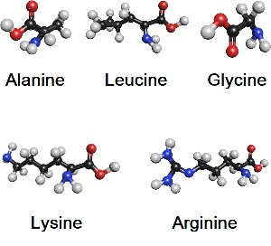
Amino Acids
An interesting study of pairs of identical twins has shown that a few
of these amino acids are much more critical for maintaining our bones.
Twins with higher intakes of alanine and glycine had
significantly higher bone density than their identical siblings.
In this analysis of 3160 women aged 18 to 79, intake of several other amino acids
(including arginine, leucine, and lysine)
was also associated with higher bone density.
People with higher intakes of these five amino acids
had a lower incidence of osteoporosis and osteopenia.
The researchers conclude that the beneficial role of selected amino acids on bone
density is similar in magnitude to those of magnesium, calcium, and vitamin C
(Jennings 2016).
-
Lysine helps our bodies absorb calcium and reduces the amount of calcium lost in the urine
(Civitelli 1992).
And it has been identified as a promising nutritional tool for preventing and treating osteoporosis
(Fürst 1993).
-
Glycine may prevent degenerative diseases such as arthritis or osteoporosis
(de Paz-Lugo 2007).
Glycine increases collagen synthesis,
and glycine deficiency could be an important cause of osteoarthritis
(de Paz-Lugo 2018).
-
Arginine builds bone mass by increasing the rate of bone formation and inhibiting bone resorption
(Visser 1994),
and it may work as well as a prescription drug
(Goel 2014).
Bioflavonoids
Bioflavonoids/flavonoids/polyphenols are pigments that create a rich rainbow of colors
in foods like blueberries, cherries, apricots, cabbage, and other fruits and vegetables.
Historically, flavonoids were called vitamin P
(Especially rutin, hesperidin, and quercetin)
(Seigler 2021).
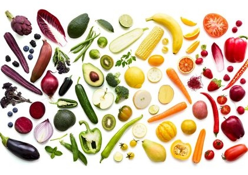
Bioflavonoid Rainbow
Bioflavonoids have a wide range of benefits.
Many studies have shown that a diet rich in bioflavonoids helps to delay the aging
process and reduce the incidence of chronic diseases, such as cardiovascular
disorders, arteriosclerosis, cataracts, cancer, diabetes, and neurological conditions
(Pandey 2009, Arts 2005, Pojer 2013, Minatel 2017)(Knekt 2002) (Habauzit 2012)(Neuhouser 2004)(Hertog).
They also have antioxidant, antimicrobial, anti-obesity, and anti-inflammatory properties
(Pojer 2013).
These naturally derived nutrients have potent bone-conserving properties and few or no side effects
(Ramesh 2021).
Many studies have reported that dietary flavonoid intake is closely associated with reducing the risk of osteoporosis
(Martiniakova 2000, Wong 2019, Sharma 2019, Pang 2006, Hirata 2009, Wang 2017, Kim 2011, Jing 2019, Vakili 2021, Li 2011, Niu 2020, Welch 2012, Chisari 2019).
Scientists have cataloged thousands of bioflavonoids/flavonoids/polyphenols,
and they have identified several that seem to have the best bone-building results:
(found in onion, asparagus, green pepper, tomatoes, fruits, and tea)
Quercetin had a dual effect.
It promotes bone formation while inhibiting bone resorption,
which results in reduced bone loss
(Niu 2020, Wang 2021).
Patients taking quercetin for three months had increased levels
of Vitamin D and calcium compared to their pre-treatment levels
(Wong 2020).
(found in citrus fruits, buckwheat, vegetables, tea, wine, and herbs)
Rutin increases bone density by slowing bone
resorption and increasing bone deposition
(Rao 2012, Lee 2020, Wang 2017).
Rutin appears to balance this out.
(found in celery, chamomile, and green pepper)
Luteolin supplementation significantly increased bone
density and prevented a decrease in bone strength
(Kim 2011, Jing 2019).
(found in spinach, kale, broccoli, tomatoes, grapes,
strawberries, citrus fruits, and Ginkgo biloba leaves)
Various studies have shown that kaempferol promotes bone formation
and induces bone cell differentiation to alleviate osteoporosis
(Wong 2019, Sharma 2019).
Kaempferol has a unique ability to protect bone-building cells from damage,
even in the presence of harmful substances
(Choi 2011, Adhikary 2018, Wong SK 2019, Zhao 2019, 2021, Tang 2022, Liu 2021).
(found in citrus fruits, grapes, cherries, tomatoes, and oregano)
Naringin has several benefits, such as antioxidant, anti-carcinogenic,
anti-inflammatory, anti-ulcer, and anti-osteoporotic effects
(Wang 2013, Hirata 2009).
In 2022, researchers reviewed the scientific literature on these bioflavonoids
(almost 300 studies)
and created this diagram showing their reported effects on bone health:
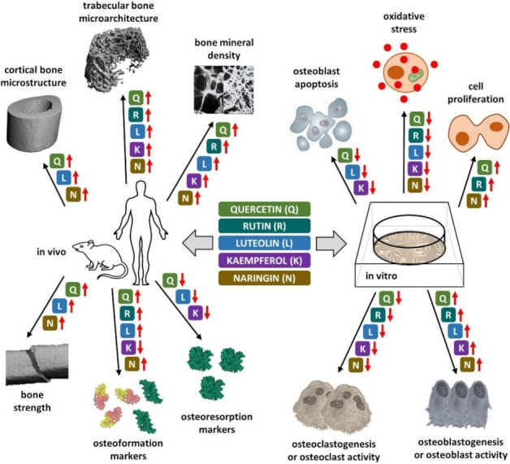
The red arrows pointing up and down indicate the impact of each
nutrient on the different bone health indicators and predictors
(Martiniakova 2022).
Green Tea
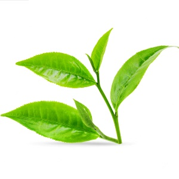
Green Tea
Green tea contains polyphenols and flavonoids that slow the
breakdown of bones and support the buildup of new bone tissue.
Scientific evidence has shown an association between tea consumption
and the prevention of bone loss and a reduced risk of fractures
(Shen 2011).
An analysis of 17 published studies concluded that tea
consumption could reduce the risk of osteoporosis
(Sun 2017).
A study with 3,530 women showed that women who consumed 1-3 cups
of green tea daily had lower rates of osteopenia and osteoporosis
(Lee 2021).
Another study with 1,134 tea drinkers concluded that older women
who drank tea had higher bone density than those who did not
(Hegarty 2000).
Tea drinking is associated with the preservation of hip structure in older women
(Devine 2007).
And one study showed that drinking tea can reduce
the risk of bone fractures by 30% to 40%
(Myers 2015).
References
Our biochemistry is quite complex and involves many protective mechanisms,
which is why there are so many different ingredients in Alcohol Safeguard.
Our comprehensive study of the scientific literature has
helped us identify safe and effective evidence-based remedies.
-
Ahmed,
The gender and age-specific 10-year and lifetime
absolute fracture risk in Tromso, Norway.
Eur J Epidemiol. 2009;24(8):441-8.
-
Azagra,
Prediction of absolute risk of fragility
fracture at 10 years in a Spanish population:
validation of the WHO FRAX tool in Spain.
BMC Musculoskelet Disord. 2011;12:30.
-
Body,
Non-pharmacological management of osteoporosis:
a consensus of the Belgian Bone Club.
Osteoporos Int. 2011 Mar 1. [Epub ahead of print]
-
Bone Health,
What is Osteoporosis and What Causes It?
Bone Health and Osteoporosis Foundation
-
Genuis,
Combination of Micronutrients for Bone (COMB) Study:
Bone Density after Micronutrient Intervention.
J Environ Public Health. 2012: 354151.
-
Martin,
Molecular mechanisms in coupling of bone formation to resorption.
Crit Rev Eukaryot Gene Expr. 2009;19(1):73-88.
-
Osteoporosis Foundation,
Epidemiology of osteoporosis and fragility fractures.
International Osteoporosis Foundation
-
Panula,
Mortality and cause of death in hip
fracture patients aged 65 or older:
a population-based study.
BMC Musculoskelet Disord. 2011 May 20;12:105.
-
Rude,
Magnesium deficiency and osteoporosis:
animal and human observations.
Journal of Nutritional Biochemistry. 2004;15(12):710-716.
-
Burt,
Effect of High-Dose Vitamin D Supplementation
on Volumetric Bone Density and Bone Strength:
A Randomized Clinical Trial.
JAMA. 2019 Aug 27;322(8):736-745.
-
Chen,
Nutritional Support and Physical Modalities
for People with Osteoporosis:
Current Opinion.
Nutrients. 2019 Dec; 11(12): 2848.
-
Cherniack,
Hypovitaminosis D:
a widespread epidemic.
Geriatrics. 2008 Apr;63(4): 24-30.
-
Lips,
Reducing fracture risk with calcium and vitamin D.
Clin Endocrinol (Oxf). 2010 Sep;73(3):277-85.
-
Reid,
Controversies in medicine:
the role of calcium and vitamin
D supplements in adults.
Med J Aust. 2019 Nov;211(10):468-473.
-
Shahnazari,
Comparison of the effect of vitamin D on osteoporosis
and osteoporotic patients with healthy individuals
referred to the Bone Density Measurement Center.
Biomol Concepts. 2019 Apr 3;10(1):44-50.
-
Sizar,
Vitamin D Deficiency.
National Library of Medicine.
July 18, 2022.
-
Akbari,
Vitamin K and Bone Metabolism:
A Review of the Latest Evidence
in Preclinical Studies.
Biomed Res Int. 2018; 2018: 4629383.
-
Apalset,
Intake of vitamin K1 and K2 and risk of hip fractures:
The Hordaland Health Study.
Bone. 2011 Nov;49(5):990-5.
-
Bugel,
Vitamin K and bone health in adult humans.
Vitam Horm. 2008;78:393-416.
-
Bunyaratavej,
Highly recommended dose of MK4 for osteoporosis.
J Med Assoc Thai. 2009 Sep;92 Suppl5:S4-6.
-
Cockayne,
Vitamin K and the prevention of fractures:
systematic review and meta-analysis
of randomized controlled trials.
Arch Intern Med 2006;166:1256-61.
-
Geleijnse,
Dietary intake of menaquinone is associated with
a reduced risk of coronary heart disease:
the Rotterdam Study.
J Nutr. 2004 Nov;134(11):3100-5.
-
Harvard,
The Nutrition Source > Vitamin K
-
Iwamoto J,
High-dose vitamin K supplementation reduces
fracture incidence in postmenopausal women:
A review of the literature.
Nutr. Res. 2009;29:221-228
-
Okura,
Undercarboxylated osteocalcin is a biomarker of carotid
calcification in patients with essential hypertension.
Kidney Blood Press Res. 2010;33(1):66-71.
-
Orimo,
Clinical evaluation of soft capsule menatetrenone
(Ea-0167) [vitamin K2] in the treatment of osteoporosis.
J. New Rem. Clin. 1992;41:1249-1279.
-
Rodriguez,
Vitamin K and Bone Health:
A Review on the Effects of Vitamin K Deficiency and
Supplementation and the Effect of Non-Vitamin K Antagonist
Oral Anticoagulants on Different Bone Parameters.
J Osteoporos. 2019; 2019: 2069176.
-
Schwalfenberg,
Vitamins K1 and K2:
The Emerging Group of Vitamins
Required for Human Health.
J Nutr Metab v.2017
-
Shiraki,
Vitamin K2 (menatetrenone) effectively prevents fractures
and sustains lumbar bone mineral density in osteoporosis.
J Bone Miner Res. 2000 Mar;15(3):515-21.
-
Chuin,
Effect of antioxidants combined to resistance
training on BMD in elderly women: a pilot study.
Osteoporos Int. 2009 Jul;20(7):1253-8.
-
Gabbay,
Ascorbate synthesis pathway:
dual role of ascorbate in bone homeostasis.
J Biol Chem. 2010 Jun 18;285(25):19510-20.
-
Hall,
The relation of dietary vitamin
C intake to bone mineral density:
results from the PEPI study.
Calcif Tissue Int. 1998 Sep;63(3):183-9.
-
Lan,
Suboptimal Plasma Vitamin C Is Associated with Lower Bone
Mineral Density in Young and Early Middle-Aged Men:
A Retrospective Cross-Sectional Study.
Nutrients. 2022 Aug 29;14(17):3556.
-
Malmir,
Vitamin C intake in relation to bone mineral
density and risk of hip fracture and osteoporosis:
a systematic review and meta-analysis of observational studies.
Meta-Analysis Br J Nutr. 2018 Apr;119(8):847-858.
-
Ruiz-Ramos,
Supplementation of ascorbic acid and alpha-tocopherol is useful
to preventing bone loss linked to oxidative stress in elderly.
J Nutr Health Aging. 2010 Jun;14(6):467-72.
-
Sahni,
Protective effect of total and supplemental
vitamin C intake on the risk of hip fracture:
A 17-year follow-up from the Framingham Osteoporosis Study.
Osteoporos Int. 2009 Nov;20(11):1853-61.
-
Zinnuroglu,
Prospective evaluation of free radicals and antioxidant activity following
6-month risedronate treatment in patients with postmenopausal osteoporosis.
Rheumatol Int. 2011 Jan 8.
-
Hamidi,
Effects of vitamin E on bone turnover markers among US postmenopausal women.
J Bone Miner Res. 2012 Jun;27(6):1368-80.
-
Mata-Granados,
Lower vitamin E serum levels are associated with
osteoporosis in early postmenopausal women:
a cross-sectional study.
J Bone Miner Metab. 2013 Jul;31(4):455-60.
-
Shuid,
Therapeutic effect of Vitamin
E in preventing bone loss:
An evidence-based review.
Int J Vitam Nutr Res. 2019 Nov;89(5-6):357-370.
-
Wolf,
How an increased intake of alpha-tocopherol can
suppress the bioavailability of gamma-tocopherol.
Nutr Rev. 2006 Jun;64(6):295-9.
-
Wong,
The Molecular Mechanism of Vitamin
E as a Bone-Protecting Agent:
A Review on Current Evidence.
Int J Mol Sci. 2019 Mar 22;20(6):1453.
-
Bueno,
Dietary calcium intake and overweight:
an epidemiologic view.
Nutrition. 2008 Nov-Dec;24(11-12):1110-5.
-
Cosman,
Clinician's Guide to Prevention and Treatment of Osteoporosis.
Osteoporos Int. 2014; 25(10): 2359-2381.
-
Heaney,
Meal effect on calcium absorption.
Am J Clin Nutr 1989;49:372-376.
-
Straub,
Calcium supplementation in clinical practice:
a review of forms, doses, and indications.
Nutr Clin Pract. 2007 Jun;22(3):286-96.
-
Waldman,
Calcium Supplements and Cardiovascular Disease: A Review.
Am J Lifestyle Med. 2015 Jul 1; 9(4): 298-307.
-
Weaver,
Calcium plus vitamin D supplementation and risk of fractures:
an updated meta-analysis from the National Osteoporosis Foundation.
2016 Jan;27(1):367-76.
-
Zhu,
Calcium plus vitamin D3 supplementation facilitated fat loss in
overweight and obese college students with very-low calcium consumption.
Trial Nutr J. 2013 Jan 8;12:8.
-
Abraham,
A total dietary program emphasizing magnesium instead of calcium.
Effect on the mineral density of calcaneous bone
in postmenopausal women on hormonal therapy.
The Journal of Reproductive Medicine. 1990 May;35(5):503-7.
-
Aydin H,
Short-term oral magnesium supplementation suppresses
bone turnover in postmenopausal osteoporotic women.
Biol Trace Elem Res. 2010 Feb;133(2):136-43.
-
Barbagallo M, Belvedere M, Dominguez LJ.
Magnesium homeostasis and aging.
Magnes Res. 2009 Dec;22(4):235-46.
-
Farsinejad-Marj,
Dietary magnesium intake,
bone mineral density and risk of fracture:
a systematic review and meta-analysis.
2016 Apr;27(4):1389-1399.
-
Gröber,
Magnesium in Prevention and Therapy.
Nutrients. 2015 Sep; 7(9): 8199-8226.
-
Kunutsor,
Low serum magnesium levels are associated
with increased risk of fractures:
a long-term prospective cohort study.
Eur J Epidemiol. 2017; 32(7): 593-603.
-
Mahdavi-Roshan,
Copper, magnesium, zinc and calcium status in
osteopenic and osteoporotic post-menopausal women.
Clin Cases Miner Bone Metab. 2015 Jan-Apr; 12(1): 18-21.
-
Matsuzaki,
Prevention of osteoporosis by foods and dietary supplements.
Magnesium and bone metabolism.
Clin Calcium. 2006 Oct;16(10):1655-60.
-
Mizoguchi T,
Dolomite supplementation improves bone metabolism through modulation
of calcium-regulating hormone secretion in ovariectomized rats.
J Bone Miner Metab. 2005;23(2):140-6.
-
Orchard,
Magnesium intake, bone mineral density, and fractures:
results from the Women's Health Initiative Observational Study.
Am J Clin Nutr. 2014 Apr; 99(4): 926-933.
-
Ryder,
Magnesium intake from food and supplements is associated
with bone mineral density in healthy older white subjects.
J Am Geriatr Soc. 2005; 53(11):1875-80.
-
Veronese,
DIETARY MAGNESIUM INTAKE AND FRACTURE RISK:
DATA FROM A LARGE PROSPECTIVE STUDY.
Br J Nutr. 2017 Jun; 117(11): 1570-1576.
-
Carnauba,
Diet-Induced Low-Grade Metabolic
Acidosis and Clinical Outcomes: A Review.
Nutrients. 2017 May 25;9(6):538
https://www.mdpi.com/2072-6643/9/6/538/htm
-
Cogswell,
Sodium and potassium intakes among US adults.
Am J Clin Nutr. 2012 Sep;96(3):647-57
-
Dawson-Hughes,
"Treatment with Potassium Bicarbonate Lowers Calcium
Excretion and Bone Resorption in Older Men and Women."
January 2009. J Clin Endocrinol Metab.94(1): 96-102. Web.
https://press.endocrine.org/doi/pdf/10.1210/jc.2008-1662
-
Green,
Role of bone in regulation of systemic acid-base balance.
Kidney Int. 1991;39:9-26.
https://www.kidney-international.org/article/S0085-2538(15)57110-X/pdf
-
Lin,
The DASH diet and sodium reduction improve markers
of bone turnover and calcium metabolism in adults.
Clinical Trial J Nutr. 2003 Oct;133(10):3130-6.
-
MacDonald,
Low dietary potassium intakes and high dietary estimates of net endogenous
acid production are associated with low bone mineral density in premenopausal
women and increased markers of bone resorption in postmenopausal women.
Am J Clin Nutr. 2005;81:923-33.
-
Sebastian,
Long-term persistence of the urine calcium-lowering
effect of potassium bicarbonate in postmenopausal women.
J Clin Endocrinol Metab. 2005;90:4417-8.
-
Tylavsky,
The importance of calcium, potassium, and acid-base
homeostasis in bone health and osteoporosis prevention.
J Nutr. 2008 Jan;138(1):164S-165S.
https://academic.oup.com/jn/article/138/1/164S/4665005
-
Beukhof,
Selenium Status Is Positively Associated with Bone
Mineral Density in Healthy Aging European Men.
PLoS One. 2016; 11(4): e0152748.
-
Capozzi,
Calcium, vitamin D, vitamin K2, and magnesium
supplementation and skeletal health.
Review Maturitas. 2020 Oct;140:55-63.
-
Della Pepa,
Microelements for bone boost:
the last but not the least.
Clin Cases Miner Bone Metab. 2016 Sep-Dec;13(3):181-5.
-
Higgs,
Nutrition and osteoporosis prevention
for the orthopaedic surgeon.
A wholefoods approach.
EFORT Open Rev. 2017 Jun; 2(6): 300-308.
-
Hoeg,
Bone turnover and bone mineral density are independently related
to selenium status in healthy euthyroid postmenopausal women.
J Clin Endocrinol Metab. 2012 Nov;97(11):4061-70.
-
Khaliq,
The Physiological Role of Boron on Health.
Biol Trace Elem Res. 2018 Nov;186(1):31-51.
-
Li Z,
Absorption of silicon from artesian aquifer water and
its impact on bone health in postmenopausal women:
a 12 week pilot study.
Nutr J. 2010;9:44.
-
O'Connor,
Zinc as a Therapeutic Agent in Bone Regeneration.
Materials (Basel). 2020 May; 13(10): 2211.
-
Pizzorno,
Nothing Boring About Boron.
Integr Med (Encinitas). 2015 Aug; 14(4): 35-48.
-
Price,
Essential Nutrients for Bone Health and a Review of
their Availability in the Average North American Diet.
Open Orthop J. 2012; 6: 143-149.
-
Price,
Silicon: A Review of Its Potential Role in the
Prevention and Treatment of Postmenopausal Osteoporosis.
Int J Endocrinol. 2013: 316783.
-
Spector,
Choline-stabilized orthosilicic acid [silica] supplementation as an adjunct
to calcium/vitamin D3 stimulates markers of bone formation in osteopenic females:
a randomized, placebo-controlled trial.
BMC Musculoskelet Disord. 2008;Jun 11; 9:85.
-
Wang,
Association between dietary selenium intake
and the prevalence of osteoporosis:
a cross-sectional study.
BMC Musculoskelet Disord. 2019 Dec 4;20(1):585.
-
Xinhua,
Serum copper levels are associated with
bone mineral density and total fracture.
J Orthop Translat. 2018 Jul; 14: 34-44.
-
Xinhua,
Serum zinc levels and multiple health outcomes:
Implications for zinc-based biomaterials.
Bioact Mater. 2020 Mar 31;5(2):410-422.
-
Zofková,
Trace elements and bone health.
Review Clin Chem Lab Med. 2013 Aug;51(8):1555-61.
-
Civitelli,
Dietary L-lysine and calcium metabolism in humans
Nutrition. 1992 Nov-Dec;8(6):400-5.
-
de Paz-Lugo,
High glycine concentration increases collagen
synthesis by articular chondrocytes in vitro:
Acute glycine deficiency could be an
important cause of osteoarthritis.
Amino Acids. 2018; 50(10): 1357-1365.
-
de Paz-Lugo,
Taking a supplement of glycine, a food additive, helps to prevent
degenerative diseases such as arthrosis or osteoporosis.
Cordis EU Research Results 2007
-
Fürst,
Dietary L-lysine supplementation: a promising nutritional
tool in the prophylaxis and treatment of osteoporosis.
Editorial Nutrition. 1993 Jan-Feb;9(1):71-2.
-
Goel,
Role of L-arginine in the treatment of osteoporosis.
Int J Orthop. 2014; 1(4):177-80. [Google Scholar]
-
Jennings,
Amino Acid Intakes Are Associated With Bone Mineral
Density and Prevalence of Low Bone Mass in Women:
Evidence From Discordant Monozygotic Twins.
J Bone Miner Res. 2016 Feb;31(2):326-35.
-
Visser,
Arginine supplementation in the prevention and treatment of osteoporosis.
Med Hypotheses. 1994 Nov;43(5):339-42.
-
Zhang,
Dietary Protein Intake in Relation to the Risk of
Osteoporosis in Middle-Aged and Older Individuals:
A Cross-Sectional Study.
J Nutr Health Aging. 2022;26(3):252-258.
-
Adhikary,
Dietary flavonoid kaempferol inhibits glucocorticoid-induced bone loss by promoting osteoblast survival.
Nutrition. 2018 Sep;53:64-76.
-
Arts,
Polyphenols and Disease Risk in Epidemiologic Studies.
Am. J. Clin. Nutr. 2005;81:317S-325S.
-
Chisari,
Polyphenol-Rich Foods and Osteoporosis.
Curr Pharm Des. 2019;25(22):2459-2466.
-
Choi,
Kaempferol protects MC3T3-E1 cells through antioxidant effect and regulation of mitochondrial function.
Food Chem Toxicol. 2011. 49(8): 1800-1805.
-
Habauzit,
Evidence for a protective effect of polyphenols-containing foods on cardiovascular health: an update for clinicians.
Ther Adv Chronic Disease. 2012. 3(2): 87-106.
-
Hertog,
Flavonoid intake and long-term risk of coronary heart disease and cancer in the seven countries study.
Arch Internal Medicine. 1995. 155(4): 381-386.
-
Hirata,
Naringin Suppresses Osteoclast Formation and Enhances Bone Mass in Mice.
J. Health Sci. 2009;55:463-467.
-
Jing,
Luteolin Attenuates Glucocorticoid-Induced Osteoporosis by Regulating ERK/Lrp-5/GSK-3β Signaling Pathway in Vivo and in Vitro.
J. Cell. Physiol. 2019;234:4472-4490.
-
Kim,
The Effects of Luteolin on Osteoclast Differentiation, Function in Vitro and Ovariectomy-Induced Bone Loss.
J. Nutr. Biochem. 2011;22:8-15.
-
Knekt,
Flavonoid intake and risk of chronic diseases.
American Journal of Clinical Nutrition. 2002. 76(3). 560-568.
-
Lee,
Rutin Improves Bone Histomorphometric Values by Reduction of Osteoclastic Activity in Osteoporosis Mouse Model Induced by Bilateral Ovariectomy.
J. Korean Neurosurg. Soc. 2020;63:433-443.
-
Li,
Comparison of Neoeriocitrin and Naringin on Proliferation and Osteogenic Differentiation in MC3T3-E1.
Phytomedicine. 2011;18:985-989.
-
Liu,
Kaempferol promotes BMSC osteogenic differentiation and improves osteoporosis by downregulating miR-10a-3p and upregulating CXCL12.
Mol Cell Endocrinol. 2021 Jan 15;520:111074.
-
Martiniakova,
The Role of Macronutrients, Micronutrients and Flavonoid Polyphenols in the Prevention and Treatment of Osteoporosis.
Nutrients. 2022 Feb; 14(3): 523.
-
Martiniakova,
Pharmacological Agents and Natural Compounds: Available Treatments for Osteoporosis.
J. Physiol. Pharmacol. 2020;71
-
Minatel,
Phenolic Compounds: Functional Properties, Impact of Processing and Bioavailability.
IntechOpen; London, UK: 2017.
-
Neuhouser,
Dietary Flavonoids and Cancer Risk: Evidence From Human Population Studies.
Nutrition and Cancer. 2004 50(1). 1-7.
-
Niu,
Quercetin Prevents Bone Loss in Hindlimb Suspension Mice via Stanniocalcin 1-Mediated Inhibition of Osteoclastogenesis.
Acta Pharmacol Sin. 2020;41:1476-1486.
-
Pandey,
Plant Polyphenols as Dietary Antioxidants in Human Health and Disease.
Oxid. Med. Cell. Longev. 2009;2:270-278.
-
Pang,
Differential Activity of Kaempferol and Quercetin in Attenuating Tumor Necrosis Factor Receptor Family Signaling in Bone Cells.
Biochem. Pharmacol. 2006;71:818-826.
-
Pojer,
The Case for Anthocyanin Consumption to Promote Human Health: A Review.
Compr. Rev. Food Sci. Food Saf. 2013;12:483-508. https://www.mdpi.com/1424-8247/14/7/690/htm
-
Ramesh,
Flavonoids: Classification, Function, and Molecular Mechanisms Involved in Bone Remodelling.
Front Endocrinol (Lausanne). 2021; 12: 779638.
-
Rao,
Polyphenol Antioxidants and Bone Health: A Review.
InTech. (2012). In book: Phytochemicals - A Global Perspective of Their Role in Nutrition and Health
-
Seigler,
Do Certain Flavonoid IMPS Have a Vital Function?
Front. Nutr., 01 December 2021
-
Sharma,
Kaempferol Stimulates WNT/β-Catenin Signaling Pathway to Induce Differentiation of Osteoblasts.
J. Nutr. Biochem. 2019;74:108228.
-
Tang,
Research on the Mechanism of Kaempferol for Treating Senile Osteoporosis by Network Pharmacology and Molecular Docking.
Evid Based Complement Alternat Med. 2022 Feb 3;2022:6741995.
-
Vakili,
Quercetin and Vitamin E Alleviate Ovariectomy-Induced Osteoporosis by Modulating Autophagy and Apoptosis in Rat Bone Cells.
J. Cell. Physiol. 2021;236:3495-3509.
-
Wang,
Naringin Enhances CaMKII Activity and Improves Long-Term Memory in a Mouse Model of Alzheimer's Disease.
Int. J. Mol. Sci. 2013;14:5576-5586.
-
Wang,
Rutin Prevents the Ovariectomy-Induced Osteoporosis in Rats.
Eur. Rev. Med. Pharmacol. Sci. 2017;21:1911-1917.
-
Wang,
Quercetin Promotes Osteogenic Differentiation and Antioxidant Responses of Mouse Bone Mesenchymal Stem Cells through Activation of the AMPK/SIRT1 Signaling Pathway.
Phytother. Res. 2021;35:2639-2650.
-
Welch,
Habitual flavonoid intakes are positively associated with bone mineral density in women.
Journal of Bone and Mineral Research 2012 Sep;27(9):1872-8.
-
Wong,
Quercetin as an Agent for Protecting the Bone: A Review of the Current Evidence.
Int J Mol Sci. 2020 Sep 3;21(17):6448.
-
Wong SK,
The Osteoprotective Effects Of Kaempferol: The Evidence From In Vivo And In Vitro Studies.
Drug Des. Dev. Ther. 2019;13:3497-3514.
-
Zhao,
Kaempferol promotes bone formation in part via the mTOR signaling pathway.
Mol Med Rep. 2019 Dec;20(6):5197-5207.
-
Devine,
Tea drinking is associated with benefits on bone density in older women.
Am J Clin Nutr. 2007 Oct;86(4):1243-7.
-
Hegarty,
Tea drinking and bone mineral density in older women.
Am J Clin Nutr. 2000 Apr;71(4):1003-7.
-
Lee,
Relationship between Regular Green Tea Intake and Osteoporosis in Korean Postmenopausal Women: A Nationwide Study.
Nutrients. 2021 Dec 26;14(1):87.
-
Myers,
Tea and flavonoid intake predict osteoporotic fracture risk in elderly Australian women: a prospective study.
Am J Clin Nutr. 2015 Oct;102(4):958-65.
-
Shen,
Green tea and bone health: Evidence from laboratory studies.
Pharmacol Res. 2011 Aug;64(2):155-61.
-
Sun,
Association between tea consumption and osteoporosis: A meta-analysis.
Medicine (Baltimore) 2017 Dec;96(49):e9034.